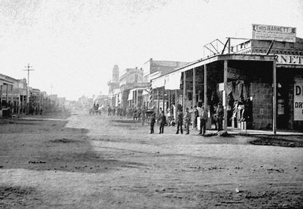
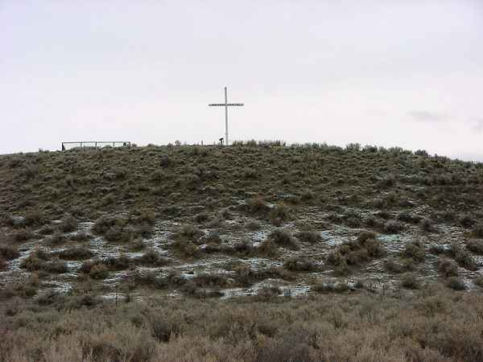
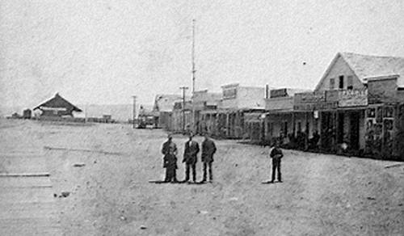
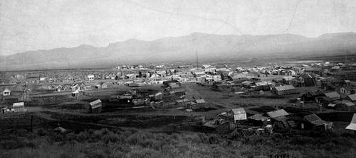

Chapitre 2
[[ Note du Traducteur : Thomas Stevens est le premier cycliste à avoir fait le tour du monde ; par la même occasion il est le premier cycliste à avoir traversé les Etats-Unis d'océan à océan ; les 4 premiers chapitres relatent sa traversée des Etats-Unis. ]]
A Travers les Déserts du Nevada
Progressivement je laisse derrière moi les pentes couvertes de pins des Sierras et chaque tour de roue m’offre des vues qui me rappellent constamment que je suis dans le grand « État de l’Armoise » [[ NdT : l’armoise pousse de façon prolifique au Nevada. En 1917 l’armoise sera désignée fleur officielle de l’État du Nevada. ]] Comme ce nom est approprié en effet. L’armoise est la première chose qu’on voit en arrivant au Nevada, presque la seule végétation qu’on voit en le traversant, et la dernière chose qu’on voit en le quittant. Jusque sur le rivage des eaux agitées de la rivière Truckee, aussi bien que sur les plaines arides, couvrant les hauts-plateaux, jusqu’en haut des collines, même jusqu’au sommet des montagnes, partout, partout, rien que l’armoise. Bien en vue sur la droite, alors que je roule vers Reno, il y a les montagnes où se situe le Comstock Lode de renommée mondiale et Reno était le point d’où autrefois on rejoignait ce fameux campement minier [[ NdT : le Comstock Lode, découvert en 1859 a été le plus important gisement d’argent-métal de l’histoire des Etats-Unis, et a déclenché une ruée vers l’argent similaire à la ruée vers l’or de 1848 en Californie ; il a également révélé une exceptionnelle richesse en or. Le nom Comstock vient de Henry Comstock, un des premiers occupants du gisement. Source : http://fr.wikipedia.org/wiki/Comstock_Lode ]].
Avant d’atteindre Reno je rencontre un indien Washoe seul [[ NdT : peuple amérindien établi entre la Californie et le Nevada depuis au moins 6000 ans. ]] ; il monte un tout petit mustang d’allure efflanquée. Une de ses jambes est complètement enveloppée dans une couverture rouge, et dans une main il tient une béquille grossièrement fabriquée. « Comment négocierez-vous des chevaux ? » demandé-je goguenard alors que nous nous croisons sur la route ; je mets pied à terre pour un entretien, pour découvrir quelle sorte d’indiens sont ces Washoes. À ma taquinerie amicale il ne daigne pas accorder de réponse, mais reste simplement assis immobile sur son cheval et fixe un « regard indien » ordinaire sur le bicycle. « Quel est le problème de votre jambe ? » persisté-je, désignant le membre emmitouflé dans la couverture.
« Pied salement malade » est la réponse, donnée avec la brièveté caractéristique du sauvage ; et maintenant que la glace de sa retenue ancestrale est brisée, il s’efforce de trouver suffisamment de mots pour me demander du tabac. Je n’ai pas de tabac, mais le trajet dans l’air vif du matin a produit un excédent de stimulations nerveuses et je me sens d’humeur à m’amuser ; aussi je me propose pour soigner son « pied malade » par des manoeuvres obscures et mystérieuses, que j’affirme sans rougir être des « pratiques de bonne médecine ». Avec une solennité de hibou ma petite clé à molette est sortie de la trousse à outils et agitée autour du « pied malade » à plusieurs reprises, et l’opération est complétée par une injection de quelques gouttes de ma burette d’huile à travers un trou de la couverture. Avant de partir je lui fais comprendre que pour avoir la « bonne médecine » opérant au mieux pour lui, il devra plonger sa peau couleur cuivre dans un bain chaque matin pendant une semaine, me flattant de ce que, alors que mes manipulations mystiques ne lui feront aucun mal, la dernière prescription lui fera certainement du bien s’il la respecte, ce qui, toutefois, est extrêmement douteux.
Famille d'indiens Washoe
Heap Sick Foot (pied salement malade)
À 10 heures 30 du matin je roulais dans Reno où l'hospitalité caractéristique des purs buveurs de whisky du Far West s’affirme immédiatement, un particulier avec un penchant sportif m’invite à faire halte ici un jour ou deux et participer avec lui à «peindre Reno en rouge» à ses frais [[ NdT : « to paint a town in red » littéralement : peindre une ville en rouge, signifie : aller faire la fête en ville. Et notamment avec une forte consommation d’alcool. ]]. En quittant Reno, ma route mène à travers les fameuses prairies de Truckee [[ NdT : Truckee Meadows est le nom d’une vallée du nord du Nevada qui englobe une partie de Reno et de Sparks. ]] une bande de très bonne terre agricole, où il se gagnait beaucoup d’argent avec la fourniture de produits au marché de Virginia City.
La ville de Reno, début des années 1880

« Mais il n’y a plus rien à en tirer depuis que le filon de Comstock s’est épuisé [[ NdT : pendant la période où le filon d’argent et d’or de Comstock était actif, la ville de Virginia City compta jusqu’à 25000 habitants. Après le déclin des mines exploitées sur ce filon la population a décru fortement ; au point qu’actuellement elle n’est que de 855 habitants. ]], » remarque d’un air maussade un fermier qui m’a offert le repas. « J’obtiendrais moins pour mon ranch maintenant qu’on ne m’en proposait il y a dix ans, » poursuit-il.
Les prairies au fur et à mesure se font plus rares et rapidement après le dîner je me retrouve en train de suivre la rivière Truckee le long d’un étroit passage entre des montagnes, dont les roches d’aspect volcanique sont vierges de toute végétation sauf d’armoise chétive. Tout le long ici des portions de route sont cyclables ; mais je dois souvent mettre pied à terre et la marche à laquelle je suis contraint équivaut à au moins un tiers de toute la distance parcourue dans la journée. De sournois coyotes rodent dans ces montagnes, d’où ils font des visites nocturnes aux proches poulaillers des fermiers de la vallée de la Truckee. À l’approche de la nuit je repère une paire de ces animaux en arrière en train de me suivre de loin à la distance respective de cinq cents yards [[ NdT : 457 mètres ]]. Cependant on n’a pas à craindre de danger de ces misérables animaux ; ils suivent simplement de loin avec l’état d’esprit d’un écolier affamé regardant avec convoitise la vitrine d’un pâtissier. Quoi qu’il en soit, la nuit tombe à l’entour, et il commence à se faire clair pour moi que cette nuit j’aurai à reposer ma tête sur le côté mou d’une pierre, et établir mon gîte sur la pente nue d’une montagne. Et ça n’incite guère à dormir de savoir que deux paires d’yeux aigus, voraces sont en train de regarder fixement à travers l’obscurité votre silhouette couchée et que deux langues rouges pourlèchent des babines dans l’attente affamée de votre sang. De plus ces animaux ont la désagréable habitude de se rassembler après la tombée de la nuit pour présenter leurs hommages à la lune et tenir des concerts qui feraient honte à tout un régiment de chats de Kilkenny [[ NdT : Kilkenny est une ville de la République d’Irlande (Irlande du Sud) qui pour diverses raisons a donné naissance à l’expression Kilkenny cat, faisant référence aux chats qui y auraient été d’une extrême agressivité au point de s’entretuer, et qui maintenant désigne un farouche batailleur – Source : http://en.wikipedia.org/wiki/Kilkenny_cat ]] bien que les deux soient peu comparables, même si l’un hurle et l’autre miaule avec pour conséquence que les deux sont tout aussi efficaces pour chasser la déesse du sommeil. Je tente de me rapprocher à portée de revolver de ces deux animaux en me dissimulant derrière des rochers ; mais il sont trop précautionneux de leur propre carcasse pour prendre le moindre risque et au moment où je disparais de leur vue derrière un rocher, ils se mettent en alerte et regardent dans quarante directions à la fois pour s’assurer que je ne viens pas d’ailleurs en me glissant vers eux. Le destin cependant a décrété que je ne dormirai pas dehors cette nuit – enfin ce n’est pas encore fait. Une cabane isolée apparaît à travers l’obscurité et sagement je dirige mes pas dans cette direction. Je découvre qu’elle est occupée. Je suis parfaitement prêt maintenant pour la nuit. Attendez ! Pas si vite ! « Il y a loin, » etc... [[ NdT : il y a loin de la coupe aux lèvres. ]] La petite cabane, ainsi que quelques acres d’un sol plutôt rocailleux, sur le bord de la rivière Truckee, sont présidés par un célibataire solitaire d’origine germanique, qui m’oberserve avec une évidente suspiscion, alors que, appuyant mon bicycle contre la porte de sa pauvre baraque je demande à être logé pour la nuit. S’agirait-il d’un homme à dos de cheval ou d’un homme et de son équipe, cette sorte d’ermite cultivateur pourrait s’accomoder jusqu’à un certain point à la personnalité de son visiteur, car il voit de temps en temps des hommes à cheval ou des hommes en chariot, peut-être une fois par semaine pendant l’été et peut en voir des quantités tous les jours en allant à Reno. Mais moi et le bicycle il ne peut pas nous « cadrer » si facilement. Il n’a jamais vu avant nos semblables et nous sommes au-delà de la frontière de son entendement teutonique. Nous lui échappons ; il échoue à assembler le puzzle ; il ne sait pas comment percer le mystère ; et avec la typique rudesse teutonique, il nous conseille de poursuivre à travers quinze miles de rocailles, de sable et d’obscurité, jusqu’à Wadsworth. La perspective de me faire du mauvais sang pour la route, affamé et las, à travers quinze miles d’une région rude et inconnue, la nuit tombée, surgit plutôt comme une tâche redoutable. Aussi convoquant ma réserve d’éloquence et de persuasion, appuyées par divers mouvements significatifs, tels que ranger le bicycle contre le mur de sa baraque et m’asseoir sur un bloc de bois sous la fenêtre, j’obtiens gain de cause pour m’installer avec une couverture sur le plancher de la cabane. Il vient juste de terminer de souper et les restes de son repas frugal sont encore sur la table ; mais il ne dit rien au sujet d’un souper pour moi : il n’est pas vraiment satisfait de lui-même ; il ne se sent pas lui-même encore rassasié ; il ressent que j’ai de mystérieuse façon obtenu un avantage déloyal sur lui et mis le pied dans sa cabane contre sa propre volonté – sauté par-dessus sa volonté pour ainsi dire. Non pas que je pense l’homme foncièrement inhospitalier ; mais il a été si habituellement seul, tellement éloigné de ses semblables, que la présence d’un étranger dans sa baraque le met mal à l’aise ; et quand cet étranger est accompagné d’un engin mécanique d’allure bizarre qui ne peut tenir debout tout seul, mais sur lequel pourtant il dit qu’il roule, on ne doit peut-être pas trop reprocher, après tout, à notre cultivateur solitaire son absence d’esprit quant à mon souper. Son esprit est occupé par d’autres pensées. « Pourriez-vous obliger un compagnon en proposant un morceau à manger ? » me risqué-je timidement, après avoir dévoré les comestibles en vue, encore et encore, avec mes yeux. « J’ai beaucoup d’argent pour payer n’importe quel service qu’on me rende » ajouté-je pour arriver à mes fins, en l’acculant et lui donner aussi peu de chances que possible de refuser, car je suis décidément affamé et si l’argent ou la diplomatie, ou les deux, peuvent procurer un repas, je n’ai pas l’intention d'aller au lit sans souper. Je ne suis pas très surpris de le voir corroborer ma foi dans son hospitalité innée en s’excusant de ne pas avoir pensé avant à mon souper, et insister, malgré mes souhaits formels, pour allumer le feu et m’offrir un repas chaud de jambon frit et de café, pour lequel je prie d’effacer toutes les impressions défavorables au regard de mon hôte que mes remarques précédentes ont pu faire naître dans l’esprit du lecteur.
Après souper il se détend un peu et je lui soutire une partie de son histoire. Il s’est installé sur ce lopin de terre semi-cultivable à l’époque de la ruée sur le Comstock [[ NdT : voir note en début de ce chapitre. ]] et prospéra très bien en vendant des légumes, avec l’aide de l’eau de la rivière Truckee et en les transportant jusqu’aux camps miniers ; mais les jours florissants du gisement Comstock sont terminés et avec eux la prospérité de notre cultivateur solitaire. Mon hôte a à peine assez de couvertures pour sa couchette étroite et c’est vraiment un acte de générosité de sa part quand il enlève une couverture de son lit et m’invite à en tirer le confort que je pourrai pour la nuit. Tout autour les montagnes sont enneigées et recroquevillé sur le sol de la cabane, comme un chaton sous un poêle au milieu de l’hiver, je frissonne pendant ces longues heures et m’efforce de me sentir heureux que ce ne soit pas pire.
Sur une courte distance, le matin suivant, la route est roulante, mais en approchant de Wadsworth elle devient sablonneuse et « sablonneux » au Nevada signifie sable mou, profond, dans lequel on s’enfonce presque jusqu’aux chevilles à chaque pas et où la possession d’un bicycle n’éveille pas cet enthousiasme comme le fait une route lisse et ferme. A Wadsworth je dois dire adieu à la rivière Truckee, et commence la traversée du Forty Mile Desert [[ NdT : Désert de quarante miles ( 64 kilomètres ) ; nom donné à l’époque de la ruée vers l’or en Californie à la vallée de Lahontan au Nevada et à la région adjacente au nord-ouest où on ne trouvait pas d’eau potable ]] qui s’étend entre les rivières Truckee et Humboldt. Debout sur une colline de sable et regardant à l’est à travers ces terres mornes, désolées, de sable, de roches et d’alkali, j’ai de vrais regrets à la pensée de quitter le frais, pétillant cours d’eau qui a été mon compagnon presque constant pendant environ une centaine de miles. Il a toujours été proche pour étancher ma soif ou me permettre un bain rafraîchissant. Plus d’une fois j’ai trompé l’ennui de quelque portion inintéressante du voyage en faisant la course avec toute sorte de choses emportées par ses vaguelettes. Je regretterai le murmure musical de ses eaux dansantes comme on peut souffrir de l’absence de la conversation d’un compagnon.
Ce Forty Mile Desert est l’endroit qui était tant redouté par les émigrants en route pour les champs aurifères de Californie, ici on ne rencontre pas un brin d’herbe ni une goutte d’eau sur les quarante miles ; rien qu’une terre désolée de sable et de roches qui réfléchissent la chaleur du soleil, et transforment le désert en une véritable fournaise à la mi-été ; le bétail des émigrants, épuisé par le long voyage depuis les États de l’est [[ Ndt : Stevens dit en fait "the States" ; désigne sans doute des 13 premières colonies britanniques d'Amérique à avoir déclaré leur indépendance en 1776 et qui ont donné naissance aux Etats-Unis ; situées sur la côte est - où se dirige Thomas Stevens - des USA il s'agit de : New Hampshire, New York, Pennsylvanie, Massachusetts, Rhode Island, Connecticut, New Jersey, Delaware, Maryland, Virginie, Caroline du Nord, Caroline du Sud, Georgie ]] succombait sous l’effort de la traversée. Bien que presque toute la piste soit impropre à la pratique du bicycle, il y a quelque bancs d’alcali qui sont assez durs et lisses pour y jouer au croquet ; et cet après-midi, alors que je roule avec une facilité imprudente en traversant un de ces endroits, je suis frappé par la singularité de la situation. Je suis au milieu de la région la plus désolée, la plus aride imaginable. Des tourbillons de sable, ressemblant de loin à d’énormes colonnes de fumée, flottent de façon erratique sur les plaines, dans tous les sens. Le soleil brûlant projette avec un saisissant éclat sur l’alcali blanc et lisse, cette affreuse et décharnée ombre trainante qui, comme un sort vengeur, accompagne toujours le cycliste les jours de soleil, qui est le fléau de la vie du cycliste endolori ! Le seul représentant de la nature animée par ici sont des espèces de petits lézards gris qui se déplacent précipitamment sur le sol nu avec une étonnante rapidité. On ne voit pas même un oiseau dans les airs. Tout ce qui vit semble instinctivement éviter cet endroit désolé sauf le lézard. Un désert large de quarante miles n’est pas particulièrement vaste ; mais quand on s’y trouve au milieu, il peut être aussi étendu que le Sahara lui-même, justement pour tout ce qu’on peut y voir, et loin sur la droite je vois un mirage parfait comme on pourrait le souhaiter.
Un homme peut à peine en croire ses propres yeux, et si l’on n’avait pas quelque connaissance de ces phénomènes étranges et merveilleux, de fait on ouvrirait des yeux grands de saisissement ; pour la même raison mais quelques miles plus loin il y a un beau lac, dont les rives sont bordées d’un feuillage onduleux, et dont les eaux fraîches semblent baigner sur ses bords les sables brûlant du désert.
À courte distance à droite de la ville de Hot Springs [[ Ndt : Hot Springs est une ville de l’Arkansas, où on trouve des sources naturelles d’eau chaude, d’où son nom, Hot Springs = sources chaudes. ]] on voit des nuages emplis de vapeur d’eau jaillir du sol, comme si d’énormes chaudrons d’eau étaient en train de bouillir là. En allant sur place je trouve, en effet, « des chaudrons d’eau bouillante » ; mais les chaudrons sont dans les profondeurs. Par intervalles l’eau bouillonnante jaillit à la surface du sol rocheux, et les flammes – ah ! Où sont les flammes ? À un autre endroit de ce désert il y a de singulières sources qui ont l’air sages et inoffensives la plupart du temps, mais parfois elles émettent des colonnes de fines goutelettes et de vapeur. On raconte à propos de ces sources qu’une fois un groupe d’émigrants passa par ici, et un des hommes s’agenouilla pour boire de cet eau claire et d’apparence saine. Au moment où il se penchait au-dessus, il fut recouvert d’une abondante quantité d’eau et de vapeur qui gicla de la source et lui fit presque perdre la raison. L’homme bondit, et courut comme pour sauver sa vie, faisant frénétiquement signe aux chariots d’avancer, et en même temps criant de sa voix la plus aigüe, « Roulez ! Roulez ! L’enfer n’est pas loin d’ici ! »
Du Forty Mile Desert ma route conduit jusqu’à la rivière Humboldt. Sur les rives du lac Humboldt est installé un campement d’une douzaine de huttes piutes [[ Ndt : piute ou paiute ; ici Stevens est en présence de Piutes du nord, groupe d’Améridiens qui vivaient en Californie, dans le Nevada et l’Oregon. ]], et je fais halte une demi-heure pour leur rendre visite. Je ne saurai jamais si je suis un visiteur bienvenu ou pas ; ils ne montrent aucun signe de plaisir ou de désagrément alors que je pousse le bicycle vers eux à travers l’armoise. L’ayant appuyé sans gêne contre un de leurs tepees, je flâne parmi eux et fouille dans leurs affaires personnelles comme un officier de santé dans un logement de New York. Je sais que je n’ai pas le droit de le faire sans demander, « avec votre permission, » mais dans le monde entier les chasseurs de souvenirs agissent de même, aussi je ne me sens pas gêné de le faire. De plus, quand je retourne je découvre que les indiens sont en train de la jouer du « tac au tac » envers moi. Non seulement ils sont en train d’examiner entièrement le bicycle avec curiosité, mais ils ont ouvert la trousse à outils et sont en train d’étudier ces outils, se les passant entre eux. Je ne crois pas que ces Piutes soient de nos jours assez intelligents ou audacieux pour voler : leurs échanges avec les blancs le long du chemin de fer a, dans une certaine mesure, atténué leurs traits de caractère aborigène qui les inciteraient à voler un bouton de cuivre sur le manteau de leur frère à la face pâle, ou dévisser un écrou de son bicycle ; mais ils ont appris à mendier ; le noble Piut d’aujourd’hui est un incorrigible mendiant. Récupérant mes outils, je vois que la clé anglaise semble avoir trouvé faveurs aux yeux d’un brave au visage ridé, qui, apparemment, est un chef. Il tient la clé avec un sourire qui est censé être envoûtant, puis la désigne alors que je suis en train de la remettre dans le sac, et grogne, « Ugh ! Piute likum ! Piute likum ! » Alors que je la tiens encore, et lui demande si c’est ce dont il parle, il la désigne à nouveau et répète, « Piute likum ; » et cette fois deux autres prennent son parti et sourient aussi et disent, « Lui grand chef ; grand chef Piute, lui ; » pensant, sans aucun doute, que ce point sera un argument décisif, et que je reconnaitrai aussitôt dans le « grand chef Piute, lui » un être considérablement supérieur et lui céderai la clé. En ceci, pourtant, ils se trompent, car la clé je n’en ai pas de rechange ; je ne distingue pas non plus de persistance de trace de royauté en lui, ni de contenance royale, ni trait de caractère particulier ; il n’y a rien non plus d’irrésistible dans son sourire – ni aucun de leurs sourires en la matière. Le sourire piute me paraît être simplement une extension froide, sans passion, de la large fente horizontale qui va presque d’une oreille à l’autre, et sépare les parties supérieures et inférieures de leurs faces inexpressives. Même les sourires des squaws sont du même patron déplaisant, bien qu’elles semblent parfaitement inconscientes de toute laideur, et lorsqu’un visiteur à visage pâle apparaît près de leur tepee elles le reçoivent tout de suite avec un de ces sourires repoussants, sans attrait.
Dimanche, 4 mai [[ NdT : année 1884 ]], me trouve ancré pour la journée au village de Lovelocks, sur la rivière Humboldt, où je passe un jour vraiment peu ordinaire. Jamais avant ne s’était rassemblée une foule aussi étrangement assortie pour regarder rouler le premier bicycle qu’ils aient jamais vu, que la foule qui se rassemble derrière la gare à Lovelocks aujourd’hui pour m’observer. Il y a peut-être cent cinquante personnes, dont une centaine d’indiens Piutes et Shoshones, et le reste un groupe mélangé de travailleurs blancs et chinois du chemin de fer ; parmi eux tous il est difficile de dire lesquels sont les plus saisis par la nouveauté de l’exhibition – les rouges, les jaunes, ou les blancs. Plus tard dans la soirée j’accepte l’invitation d’un guerrier Piute de venir à leur campement, derrière le village, et d’assister au spectacle d’équipes rivales de squaws Shoshones et Piutes disputant un match de « Fi-re-fla », le jeu national à la fois des tribus Shoshones et Piutes. Le principe du jeu est similaire au polo. Les squaws sont armées de longs bâtons, avec lesquels elles tentent d’en envoyer un plus petit dans le but. C’est un spectacle pittoresque et nouveau de voir les squaws, vêtues de costumes dans lesquels l’habit du sauvage et du civilisé sont singulièrement mélés et la plupart des couleurs de l’arc-en-ciel mélangées pêle-mêle, luttant sur le terrain avec l’agilité d’une équipe professionnelle de joueurs de polo pendant que les mâles et les squaws âgées, avec les enfants, sont assis autour et regardent le match avec un inoubliable enthousiasme. L’équipe Shoshone gagne et ils ont l’air satisfait.
Ici, à Lovelocks, je tombe sur un de ces personnages étranges et en apparence incongrus, qu’on rencontre à l’occasion dans l’Ouest. Il est en train de discuter dans leur langue avec un petit groupe de Piutes, et je fais connaissance en lui demandant l’âge probable de l’un des indiens, dont la figure ridée et tannée semble indiquer une longévité inhabituelle. Il me dit que l’indien est probablement âgé de quatre-vingt dix ans ; mais les indiens eux-même ne connaissent jamais leur âge, du fait qu’ils comptent tout au moyen des changements de lune et des saisons, n’ayant aucune connaissance de l’année calendaire. Pendant que nous nous entretenons de ce sujet, imaginez ma surprise d’entendre mon informateur – dont on penserait que pour lui les Écritures sont la dernière chose au monde de quoi parler – apporter l’information que nos vénérables et vénérés ancêtres, les antédiluviens, comptaient l’écoulement du temps de la même façon que les indiens, et que au lieu que Mathusalem soit âgé de neuf cent soixante neuf ans, ce devrait être revu et être lu comme « neuf cent soixante neuf lunes ,» ce qui ramènerait cette personne d’autrefois, à la longue vie – le plus vieil homme qui ai jamais vécu – à l’âge vénérable mais en aucune façon extraordinaire, de quatre-vingts ans et neuf mois. C’est la première fois que j’ai entendu cette hypothèse, et mon étonnement de l’entendre des lèvres d’un rude endurci des plaines du Nevada, assis au milieu d’un groupe d’indiens illettrés, peut facilement être imaginé.
En route, je continue de remonter la vallée Humboldt, roulant maintenant sur un terrain d’alcali, plat, lisse, puis encore une fois avançant laborieusement dans du sable mou, tout autour une douzaine de crêtes de montagnes enneigées, la Humboldt serpentant paresseusement à travers la plaine d’alcali ; passé Rye Patch à droite de laquelle il y a d’autres sources chaudes, et plus loin des mines de soufre pur, et toutes ces choses, en particulier la dernière, désagréablement évocatrice d’un certain endroit où le climat est communément supposé être inconfortablement chaud.
Chemin faisant je passe Humboldt [[ Ndt : site minier né de la ruée vers l'or ; maintenant une ville fantôme ]], endroit près duquel je percute sans raison un inoffensif blaireau qui épie inquisitorial hors de son terrier alors que je passe à sa hauteur. Il y a quelque chose de curieusement pathétique dans les mouvements d’un blaireau mourant, et à peine le coup inconsidéré a-t-il accompli sa mission de mort que je regrette de l’avoir fait.
Sortant de Mill City le matin suivant je perds ma route, et me retrouve près d’un petit camp minier dans les montagnes au sud du chemin de fer. Pensant rejoindre la route rapidement en traversant le secteur en passant à travers l’armoise, je tombe dans un endroit où cet arbuste entreprenant est si épais et si haut que je dois porter le bicycle au-dessus ma tête pour passer au travers.
À trois heures de l’après-midi j’arrive à une maison de service du chemin de fer. [[ Ndt : maisons qui servaient au stockage du matériel pour l’entretien d’une section du chemin de fer, et également dans certains cas à l’hébergement des ouvriers chargés de cet entretien ; il y a une petite photo d'une ce ces maisons dans le chapitre 1. ]] Au dortoir chinois je rencontre un seul sujet du Céleste Empire, qui, pour une quelconque raison reste dans la maison. N’ayant rien eu à manger et à boire depuis six heures ce matin, j’exhibe au Chinois un sourire dans l’intention de convaincre son coeur païen de n’importe quel projet gastronomique que je puisse proposer ; mais les sourires sont peine perdue avec John Le Chinois.
« John, pouvez-vous me préparer quelque chose à manger ? »
« Non ; Chinois pas savoir quoi homme blanc manger ; Chinois seulement manger riz ; pas galette de riz. »
Ça sonne assez définitif ; néanmoins je n’ai pas l’intention d’être repoussé si facilement ; il n’y a rien de particulièrement attrayant dans un dollar d’argent, mais dans les yeux bridés du Chinois des décors de beauté paradisiaque ne sont rien comparés à la surface terne d’une pièce de cinquante cents de vingt ans d’âge ; et le tintement des pièces d’argent est plus mélodieux aux oreilles sans romantisme du chinetoque que tout un festival de musique.
« John, je vous donnerai une paire de pièces de two-bit [[ Ndt : two-bit, expression datant de l’époque de la colonisation aux USA et restée dans le langage avec le sens de ¼ de dollars – Source : http://en.wikipedia.org/wiki/Bit_(money) ]] si vous me donnez un morceau [[ Ndt: en anglais, morceau se dit : bite ; jeu de mot avec bit de two-bit vu précédemment. ]] de quelque chose, » persistè-je. Les yeux noirs et petits de John scintillent à l’idée des pièces d’un quart de dollar, et son visage expressif prend la physionomie du commerçant, quand avec un changement risible de face, il répond :
« Wha’ ! Vous donner moi pièce [[ NdT : pièce se dit : bit, en argot américain ]], moi donner vous morceau [[ Ndt : en anglais, morceau se dit : bite ; là encore jeu de mot avec bit et bite. ]] à manger ? »
« C’est bien ça, John. Et s’il vous plait faîtes aussi vite que possible. »
« Bien très ; vous donner moi pièce ; moi frire vous amélicain plancake. »
« Oui, des pancakes feront l’affaire. En avant ! »
Des visions de pancakes et de mélasse [[ Ndt : sirop très épais, résidu du raffinage de la canne à sucre. ]] voltigent devant mes yeux égarés par la faim, alors que je suis assis dehors, attendant qu’il les ait préparés. Dix minutes plus tard, John m’appelle. Sur une assiette en fer blanc, qui a l’air d’avoir été juste délivrée d’un barril de graisse, est posée une masse informe ressemblant à du mastic – c’est le « amélicain plancake » ; et le sujet du Céleste Empire installe triomphalement une caisse vide devant pour que je m’y asseye et tend sa main grasse pour le prix convenu. Puisse le lecteur n’être jamais voracement affamé et avoir à choisir entre un « amélicain plancake » et rien ! C’est juste un bloc de pate ferme, fait seulement d’eau et de farine, et plongé pendant quelques minutes dans de la graisse chaude. Je demande de la mélasse ; il ne sait pas ce que c’est. Je réclame du sirop, pensant qu’il peut reconnaître ce que je veux avec ce mot. Il apporte un bocal de ketchup chinois liquide, dont le goût a quelque chose de l’odeur du fromage de Limburg [[ Ndt : fromage créé au 19ème siècle dans le duché de Limburg (duché maintenant divisé entre la Belgique, l’Allemagne et la Hollande) ; ce fromage est connu pour sa forte odeur, se rapprochant de celle du Munster. ]] Je le prie immédiatement de l’emporter où son influence supposée bénigne ne pourra m’atteindre. Il prépare de l’excellent thé chaud, cependant, grâce auquel je parviens à déglutir une portion du « plancake ». On ne s’attend pas à un très élégant festin pour cinquante cents dans l’État de l’armoise ; mais cet « amélicain plancake » est le pire repas à cinquante cents dont j’ai entendu parler.
Cette nuit je reste à Winnemuca, le siège du comté de Humboldt, et une ville plutôt animée de 1200 habitants. « C’est pour quoi ? » sont les premiers mots en entrant dans l’hôtel, et « Vous n’emmènerez pas une bouteille de Whisky ? » sont les dernières paroles en le quittant le matin suivant. Il y a des Piutes et encore des Piutes qui campent à Winnemucca, et dans la matinée je rencontre un jeune guerrier à cheval à une courte distance hors de la ville et le laisse s’essayer avec le bicycle. Je l’aide à avancer sur quelques mètres puis le fait descendre ; et puis je lui montre comment monter et l’invite à essayer par lui-même. Il fait bravement une tentative, mais s’élance avec trop d’énergie, et bascule en avant, avec le bicycle faisant une pirouette sur lui. Cela satisfait sa curiosité aborigènale, et il rit et secoue la tête quand je lui propose d’échanger le bicycle pour son mustang. La route sablonneuse tout au long de Winnemucca est fatigante, et il n’est guère possible de rouler. La rivière court dans ces parages à travers de riches plaines verdoyantes ; mais les prairies disparaissent rapidement alors que je progresse vers l’est. Vingt miles à l’est de Winnemucca la rivière et la voie ferrée passent dans le canyon d’une basse chaîne de montagnes alors que ma route passe sur le sommet. La rivière Humboldt n’est pas un beau cours d’eau, et sur la majeure partie de son cours ses méandres alternent entre des étendues monotone d’armoise, de basses collines de sable et de longs passages au travers d’un canyon de quelque chaîne de montagne stérile. Mais “le recul contribue à l’enchantement de la vue,” [[ Ndt : 'Tis distance lends enchantment to the view' vers du poème Pleasures of Hope (1799), du poète écossais Thomas Campbell (1777-1844). Ref : The Living Poets of England, publié en 1827. ebook gratuit sur Google https://goo.gl/Fe8w7x ]] et du sommet du col de la montagne même la Humboldt est magnifique. Le soleil brille sur ses eaux, lui donnant de l’éclat, et pendant un bon nombre de miles sa surface scintillante peut se voir suivant sa course serpentine à travers les vastes étendues de sauge grisâtre et les plaines d’arbrisseaux, et par endroits d’étroites bandes vertes, en contraste saisissant avec le gris environnant, signalent où les plantes rustiques de montagne s’aventurent à envahir les domaines de l’autocratique armoise. Quel est ce petit reptile d’allure bizarre, moitié lézard, moitié crapaud, qui détale au milieu des roches ? Il est différent de tout ce que j’ai déjà vu. Il y a autour de l’arrière de son cou et sur les côtés, et, moins prononcé, sur tout son corps gris jaunâtre, de petites protubérances comme des cornes qui donnent à ce petit sujet une apparence très étrange. Ah ! Je sais de qui il s’agit. J’ai entendu parler de lui, et j’ai vu sa photo dans des livres. Je suis heureux de faire sa connaissance C’est « Prickey » [[ Ndt : surnom sans doute créé à partir du mot “prick” qui signifie pointu, piquant - à noter que cet animal n’est pas un crapaud mais un lézard. ]] le fameux crapaud cornu du Nevada. Cet éperon montagneux, entre le camp minier de Golconda et Iron Point, est le seul endroit où je l’ai vu pendant le voyage. C’est une très intéressante petite créature, plus lézard que crapaud, parfaitement inoffensive ; et ses petits yeux comme des perles sont brillants et fascinants comme les yeux du serpent à sonnette.
Les étendues d’alcali abondent, et de superbes portions roulantes devraient se trouver à l’est d’Iron Point. Juste avant que l’obscurité descende sur la région de plaine et de montagne à l’entour j’atteins Stone-House, une maison de service du chemin de fer.
« Oui, je pense qu’on peut vous trouver un morceau de quelque chose ; mais ça sera froid, » est la réponse qu’on daigne faire à ma requête pour un souper. Étant plus préoccupé ces jours-ci par la quantité de provisions que je peux obtenir que par la qualité, la perspective d’un souper froid n'est pas accueillie avec ingratitude. Je préfèrerais avoir une miche de pain de quatre livres et une épaule de mouton pour souper maintenant plutôt qu’une petite quantité de viande de qualité extra ; et j’ai l’intention de satisfaire les envies de mon être intérieur avant de quitter la table. Mais, et au sujet d’un endroit pour dormir ? Pour quelque inexplicable raison ces gens refusent de m’accorder ne serait-ce même que le grenier pour la nuit. Ils ne tiennent pas un hôtel, disent-ils, ce qui est tout à fait vai ; ils ont le droit de refuser, même s’il y a vingt miles jusqu’au prochain site ; et oui ils refusent.
« Il y a le dortoir vide des Chinois plus loin. Vous pouvez vous aventurer par-là, si z’avez pas peur des fantômes, » est leur mot d’adieu, alors que les portes se ferment et me laissent debout, comme un banni, dans la plaine sombre, aride.
Il y a une semaine ce dortoir était occupé par une équipe d’employés Chinois du chemin de fer, qui en sont arrivés à se quereller entre eux, et la querelle s’est terminée en une tragique affaire d’empoisonnement, qui s’est soldée par la mort de deux d’entre eux, et en a presque tué un troisième. Les Chinois sont des superstitieux, et depuis cette affaire aucun Chinois ne dormirait dans le dortoir ou ne travaillerait dans ce secteur ; en conséquence le bâtiment reste vide. Les « fantômes » de Chinois assassinés sont tout sauf une agréable compagnie ; cependant ils sont préférables à des blancs inhospitaliers, je marche jusqu’à la maison et étends mon squelette las dans - pour autant que je sache - la même chambrée dans laquelle, il n’y a que quelques jours, reposaient les macabres corps des sujets empoisonnés du Céleste Empire. En dépit des souvenirs désagréables s’accrochant à l’endroit, et de mon lit sans oreiller ni couverture, je suis bientôt au pays des rêves. Il est difficilement imaginable qu’on fasse des rêves roses dans de telles conditions, et d’ailleurs, près de minuit je me réveille en frissonnant de froid. Les montagnes enneigées dressent leurs têtes blanches dans la nuit silencieuse, sombre et fantomatique à l’entour , et refroidissent l’air de la nuit, même au milieu de l’été. Je suis couché là, essayant en vain de me réendormir, car il fait manifestement de plus en plus froid. A deux heures je ne peux le supporter plus longtemps, et donc je me lève et m’élance pour Battle Mountain, à vingt miles devant.
La lune est montée ; elle est pleine au deux tiers, et un spectable plus beau que celui qui maintenant salue mon départ du dortoir est difficilement possible de concevoir. Seuls ceux qui sont passés dans cette région située entre les montagnes peuvent avoir une idée de ce clair de lune magnifique dans l’air transparent de cette région sèche, en altitude. Il fait presque aussi clair que le jour, et on voit suffisamment où la route est pratiquable pour rouler à bicycle. La lune claire semble remplir tout l’espace de la vallée avec un flot de lumière douce et argentée ; les pics de nombreuses montagnes enneigées surgissent blancs et spectraux ; l’air paisible est fendu par les jappements d’une meute de coyotes hurlant bruyamment vers l’auteur jaune pâle de toute cette beauté, et le cri sauvage, surnaturel d’un oiseau ou d’un animal inconnu venant de quelque mystérieux, indéfinissable territoire complète une image idéale de l’Ouest, un poème, un rêve, qui compense entièrement les désagréments de l’heure précédente.
L’inspiration de cette belle scène réveille le poète qui sommeillait en moi, et je suis stimulé pour composer un poème - « Clair de lune dans les Rocheuses » - dont j’attends de voir un jour le monde se déchirer à son propos !
A quelques miles du baraquement chinois je passe un groupe d’indiens campant au bord de ma route. Ils sont accroupis autour des braises fumantes d’un feu d’armoise, dormant, somnolant. Je roule doucement et prudemment le long de la route qui se trouve être roulable à cet endroit, et je suis assez loin d’eux avant d’être vu. Alors que je m’évanouis progressivement dans l’air sous l’éclairage de la lune je me demande ce qu’ils croient que ce fut - cette chose à l’allure étrange qui est passée en glissant si silencieusement et si mystérieusement. Il est prudent de s’assurer qu’ils me prennent pour n’importe quoi sauf chair et sang, pendant qu’ils se réveillent discutent entre eux et scrutent mon ombre disparaissant dans l’obscurité.
De Battle Mountain ma route conduit à travers un terrain bas fait d’alcali, au travers duquel des dizaines de ruisselets coulent jusqu’à la Humboldt. Beaucoup d’entre eux sont assez étroits pour sauter par-dessus, mais pas avec un bicycle sur une épaule, car dans de telles conditions il y a toujours la fâcheuse incertitude d'échouer désastreusement avant de réussir. Mais je commence à être fatigué de me dévêtir en partie pour passer à gué des ruisseaux qui de toute façon sont à peine plus que des fossés, et je me résouds à utiliser la machine comme d’une perche. La plaçant au milieu du cours d’eau, je place une main sur le guidon et l’autre sur la selle, et m’en sert comme point d’appui pour retomber sur la rive opposée. Tirant jusqu’à moi ensuite le bicycle, la chose se fait. On ne dira jamais tous les usages qui peuvent être faits de cette « créature » à deux roues en cas de nécessité. L’inventeur ne s’était certainement jamais attendu à ce qu’on l’utilise comme perche pour sauter au-dessus des cours d’eau. Vingt-cinq miles à l’est de Battle Mountain la vallée de la Humboldt s’élargit en une plaine d’une largeur conséquente, au travers de laquelle les méandres font beaucoup de courbes en fer à cheval, et dessinent avec profusion les crémaillères et les patères de notre enfance. Parmi ces innombrables courbes et contre-courbes, des bosquets de saules et les roseaux bluejoint [[ Ndt : il s’agit du nom commun de la Calamagrostis canadensis, très abondante sur le continent nord-américain ]] poussent abondamment, et offrent abri à des milliers de pélicans, qui élisent domicile ici loin de la présence dérangeante de l’homme. Totalement inconscient des difficultés à venir, je suis la piste des chariots qui passe au travers de cette vallée jusqu’à ce que je me retrouve sur le bord de la rivière, cherchant piteusement autour quelque voie par où je puisse poursuivre ma route. Je suis dans le coude d’un méandre en fer à cheval, et la seule voie de sortie et de retourner sur mes traces pendant quelques miles, fastidieux exercice que je rechigne plutôt à faire. Jetant un coup d’oeil autour je découvre quelques vieux poteaux de clôture qui ont descendu le courant depuis le patelin de Beowawe [[ Ndt : petit village du Nevada fondé en 1861 avec l’arrivée du chemin de fer et qui compta au maximum une soixantaine d’habitants ; de nos jours est considéré ville fantôme, la plupart des résidents ayant quitté la ville vers 1916. Source : http://en.wikipedia.org/wiki/Beowawe,_Nevada ]] et se sont fichés dans la rive. Je décide de les utiliser pour essayer de faire traverser la rivière à ma machine, rivière qui n’est pas plus large que trente yards à cet endroit. M’engageant le premier dans l’eau avec mes vêtements, j’attache le bicycle aux poteaux, ce qui l’empêche tout juste de couler, et je réussis à le mener à bon port de l’autre côté. Le village de Beowawe est rempli de cowboys en train de se préparer pour le rassemblement annuel de printemps. Blancs, indiens, et mexicains composent la foule hétéroclite. Ils ont l’air d’un rassemblement de sauvages, avec leur surpantalons en peau d’ours, et leurs harnachements semi-civilisés, galopant d’un point à un autre, dans et hors du village. « Je n’ai pas le temps, sinon je le ferais, » est ma réponse un peu mensongère à une invitation à faire halte pour la journée et à prendre du plaisir. Brièvement dit, ceci, pour le cowboy, consiste à atteindre une ivresse hilarante, puis tirer au jugé sur tout ce qui capte l’intérêt de sa fantaisie embrouillée de whiskey comme représentant une cible convenable. Aussi un bicycle, par-dessus tout, attirerait de fait l’intérêt d’un cowboy « euphorique » en tant qu’objet provoquant l’attention, en particulier s’il est monté par un homme ; aussi après avoir partagé avec eux des sourires de bonne camaraderie, et leur avoir montré le modus operandi du cycle, je juge sage de poursuivre ma route dans la vallée.
À trois miles de Beowawe on trouve la célèbre « Maiden’s Grave » [[ Ndt : tombe de la jeune femme ]] sur une petite colline ou promontoire au bord de la route ; et « thereby hangs a tale. » [[ Ndt : thereby hangs a tale est une phrase tirée de la pièce de théâtre As You Like It ( Comme Vous Voudrez ) de William Shakespeare ; on pourrait la traduire par : voilà une histoire incroyable. Source : http://www.shmoop.com/shakespeare-quotes/thereby-hangs-a-tale/meaning-now.html ]] Dans des jours plus anciens [[ NdT : l’évènement que relate Stevens est survenu en 1863 ; la tombe est celle de Lucinda Parker Duncan 1792-1863. qui était donc loin d’ être une jeune femme, mais était au contraire une solide grand-mère et n’en fut pas moins emportée en quelques jours par la maladie. Source : http://elkorose.schopine.com/duncan.html ]] un groupe d’émigrants avait installé son campement près de Gravelly Ford, attendant la baisse des eaux, pour pouvoir traverser la rivière, quand une jeune femme [[ Ndt : Stevens a sans doute été trompé par le nom du site ; comme nous l’avons dit précédement il ne s’agissait pas d’une jeune femme. ]] du groupe tomba malade et mourut. Une pierre tombale grossièrement sculptée fut dressée pour marquer l’emplacement où elle fut enterrée. Des années après, quand la voie ferrée fut construite jusqu’ici, les hommes découvrirent cette pierre tombale rudimentaire seule sur le morne promontoire, et furent conduits par un sentiment de dignité à élever un solide mur autour pour la préserver des morbides coyotes ; et, plus tard, le superintendant de la division érigea une grande croix blanche, qui maintenant se dresse en pleine vue du chemin de fer. Sur un côté de la croix est écrite la simple inscription, « Maiden’s Grave ; » sur l’autre, son nom, « Lucinda Duncan .»
Maiden grave

Laissant le bicycle au bord de la route, je monte en haut du promontoire escarpé et examine l’endroit avec quelque curiosité. Il y a maintenant douze autres tombes à côté de l’originale « Maiden’s Grave ,» car les gens de Beowawe et la région environnante ont choisi cet emplacement romantique pour y enterrer les dépouilles de leurs chers disparus. Cet après-midi je suis la rivière à travers Humboldt Canyon plutôt qu’emprunter une longue route indirecte passant sur les montagnes. La première chose remarquable au sujet de ce canyon sont les singulières lignes laissées par l’eau parfaitement visibles sur les parois, bien au-dessus du niveau que l’eau pourrait atteindre car ses canaux actuels d’évacuation sont dégagés. On pense que la région à l’est de l’éperon de Red Range, qui s’étend tout au travers de la vallée à Beowawe, et à travers laquelle la Humboldt semble avoir tracé son cours, était antérieurement un lac, et que le travail d’érosion de l’eau lui a peu à peu ouvert un passage à travers la barrière rocheuse massive, laissant seulement les hautes lignes marquant le niveau de l’eau sur les parois de la montagne pour dire l’ampleur du changement. Dans ce canyon les parois rocheuses dominent de toute leur hauteur comme de gigantesques remparts sombres et lugubres de chaque côté, et les eaux bouillonnantes, furieuses de la Humboldt – qui pour une fois sort de sa léthargie caractéristique, et dévale et gronde sur un lit de roches déchiquetées qui semblent avoir été jetées dans ce canal par quelque main herculéenne – remplissent cet immense « fissure » dans les montagnes d’un grondement sans fin. La pluie menaçait depuis les deux dernières heures, et maintenant le premier éclat de tonnerre que j’aie entendu de tout le voyage réveille les voix du canyon qui font écho et roulent et grondent le long de cette grande déchirure comme un monstre en colère grognant de courroux. Les coups de tonnerre se suivent rapidement, les forts et nouveaux échos d’un éclat semblant chasser furieusement les voix fuyantes de son prédécesseur de paroi en paroi, et de cavité en saillie, le long de sa course rocheuse et erratique dans le canyon. De vifs éclairs fourchus jaillissent en travers du lourd nuage noir qui a l’air de se tenir sur les deux parois, coiffant le canyon d’un plafond terrible. Le brasier électrique illumine les sombres cavités des imposantes roches alors qu’il avance le long des crêtes et monte vers les sommets montagneux ; en même temps de grosses gouttes de pluie commencent à frapper le sol, augmentant progressivement avec la fureur croissante de leurs alliés au-dessus, jusqu’à ce qu’une forte, torrentielle averse de pluie et de grêle me contraigne à trouver refuge sous un rocher en surplomb.
À quatre heures de l’après-midi j’atteins Palissade, un village le long de la voie ferrée situé dans l’endroit le plus romantique qu’on puisse imaginer, sous les ombres des palissades rocheuses qui se dressent de leur hauteur comme un abri protecteur, comme si leur mission en particulier était de le protéger de tout mal. À l’évidence ces montagnes ont été déchirées en deux par un tremblement de terre et ce grand gouffre sombre est resté ouvert, car on peut voir parfaitement que les deux parois constituent deux moitiés de ce qui fut une fois une montagne massive. De curieuses grottes sont visibles sur les faces des parois, et une, plus remarquable que les autres, a été baptisée « Maggie’s Bower, » en l’honneur d’une belle jeune fille écossaise qui avec ses parents s’attarda une fois au fond d’une crique voisine pendant quelques temps, pour rassembler leur bétail. Mais tout n’est pas que romance et beauté même entre les immenses parois de la Humboldt ; de grande et criardes publicités pour des spécialités pharmaceutiques sont peintes aux endroits les plus beaux et les plus voyants des palissades rocheuses. L’entreprise commerciale doit bien sûr être félicitée et encouragée ; mais il est vraiment ennuyeux qu’on ne puisse laisser son sentiment artistique – constamment en quête du beau et du sublime – s’attarder en une réflexion émue sur quelque bel objet sans en même temps avoir l’attention appelée sur les cors aux pieds, les affections hépatiques, et les maux multiples dont la chair hérite.
Il fait sombre comme dans une purée de pois ici avant que je quitte le canyon en me dirigeant vers Carlin. Plus loin, la gorge s’élargit, et un épais taillis s’interpose entre la route et la rivière. Du taillis, je vois en train de scruter dans ma direction deux petites balles rondes phosphorescentes, comme deux petites lunes miniatures. Je me demande de quelle sorte d’animal il s’agit, pendant que je m’avance en roulant dans l’obscurité, revolver à la main, prêt à me défendre s’il m’attaquait. Je pense que c’est un lion de montagne, vu qu’ils semblent abonder dans cette partie du Nevada. Aussi tard qu’il soit quand j’atteins Carlin, les « gars » doivent voir comment on roule à bicycle, et, comme il n’y a pas d’autre endroit praticable, je décide de faire quelques cercles autour de la table de billard, dans la salle du bar de l’hôtel, me scalpant presque au cours de la démonstration avec le chandelier de bronze. Je me hâte, néanmoins, de clarifier que ces évènements se déroulaient immédiatement après mon arrivée, de peur que quelque sage de ce monde, ou personne trop sagace les en vienne à suspecter d’être les entreprises tapageuses de quelqu’un qui aurait « passé une fois de trop un bon moment avec les potes. »
Carlin, fin 19ème ou début 20ème siècle ?

Source http://www.onlinenevada.org/articles/carlin
Il n’est guère possible de rouler tout au long de cette partie du Nevada, et, dans le but de parcourir les quarante miles [[ Ndt : environ 64 kilomètres ]] par jour que je me suis rigoureusement imposés, il m’arrive parfois de me lever et de partir au lever du jour. Le lever du soleil est à peine achevé quand, suivant la voie ferrée de Five-mile Canyon – une autre fissure à travers les nombreuses chaînes de montagnes qui traversent cette partie du Nevada dans toutes les directions sous le nom générique de Montagnes de Humboldt – je me retrouve dans une aventure saisissante. Je suis en train de rouler le long de la rivière dans le canyon, quand contournant la forte courbe d’une paroi montagneuse, j’aperçois un lion de montagne au pelage fauve trottant tranquillement devant moi, pas plus de cent yards en avant. Il ne m’a pas encore vu ; il est parfaitement inconscient du fait qu’il est « en sa présence. » [[ Ndt : peut-être une allusion humoristico-biblique, « to be in the presence of God » être en présence de Dieu. ]] Une personne à l’attitude habituelle aurait simplement révélé sa présence par un toussottement courtois ou n’importe quel léger bruit, et le lion aurait immédiatement fait un bond en arrière dans les taillis. Incapable de résister à la tentation, je tire sur lui, et bien sûr je le manque, comme le fait évidemment quelqu’un à une centaine de yards, avec un revolver bulldog [[ NdT : type de revolver de poche de gros calibre à canon court ]] Cependant la balle doit lui avoir fait roussir un peu la peau, car au lieu de filer impétueusement dans les buissons, comme je le prévoyais, il fait demi-tour brutalement et vient vers moi rapidement en bondissant et à vingt pas s’accroupit pour bondir. Baissant sa tête féline presque sur le sol, ses yeux ronds jetant des éclairs de feu, sa queue battant l’air avec colère, il a l’air sauvage et dangereux. M’accroupissant derrière le bicycle, je lui tire dessus encore une fois. Dans de telles circonstances, neuf fois sur dix on tirerait au-dessus de la cible, et, anxieux d'éviter cette erreur, je fais l’inverse, et tire trop bas. La balle frappe le sol juste devant sa tête, et lui projette du sable et du gravier dans la gueule, et peut-être dans ses yeux ronds méchants ; car il bondit et disparaît dans les taillis. Je dois verser du sang d’une façon ou d’une autre avant de quitter le Nevada ! Il ne se passe pas un jour sans que je tire sur une chose ou une autre ; tout ce que je demande à un animal est de venir à deux cents yards et je gaspillerai une cartouche sur lui, car je ne manque jamais de toucher... le sol.
À Elko [[ Ndt : ville fondée en 1868 et qui en 1869 ne comptait comme "édifice" qu'une soixantaine de tentes ; avec l'arrivée du chemin de fer elle s'est considérablement développée et a de nos jours une importante activité minière (or). Lors du passage de Thomas Stevens en 1884 elle compte environ 1200 habitants, et les mines d'or et le jeu sont des secteurs essentiels de son économie. ]], où je prends mon dîner, je fais la connaissance d’un personnage, au réjouissant sobriquet d’ « Alkali Bill », qui a les vues les plus vastes et les plus universelles que n’importe quelle personne que j’aie jamais rencontrée. Il a lu quelques lignes, quelque chose au sujet de moi roulant autour du monde, et avec considération il prend sur lui la tâche de résumer les quelques obstacles sans importance que je rencontrerai dans mon voyage circulaire : « Il y a seulement une petite montée à Sherman, » se hausse-t-il à m’expliquer, « et une autre encore plus petite aux Alleghanies [[ Ndt : partie de la chaîne de montagne des Appalaches ]] ; tout le reste est en descente vers l’Atlantique. Bien sûr vous aurez à faire en bateau la traversée de la mare aux grenouilles ; puis c’est l’Europe – essentiellement plate ; l’Asie est pareille sauf l’Himalaya – et vous pouvez rapidement les traverser ; ensuite vous êtes tout peinard, car il n’y a pas de montagne à proprement parler en Chine. »
Vue d'Elko

Source http://www.onlinenevada.org/articles/elko
Manifestement « Alkali Bill » est une personne qui pointe d’un doigt méprisant les idées étriquées, et laisse les détails ennuyeux de la vie aux autres gens étroits d’esprit. Dans son immense et glorieux imaginaire il voit un cycliste-centaure écumant états et continents comme l’oiseau frégate, ignorant avec mépris les déserts de sable et les fleuves sans pont, ne s’arrêtant devant rien sauf les océans, et ralentissant seulement un peu quand il affronte un sommet qui dresse sereinement ses vingt milles pieds de grandeur enneigée en travers de son chemin. C’est un César qui est ignoré par ce monde plongé dans les ténèbres, car dans son aveuglement, ce monde ne fera pas appel à un homme tel qu’Alkali pour lui demander de le conduire en avant vers des actions d’inconcevable grandeur ! Alkali Bill peut couper plus de bois en une heure que certains hommes ne le peuvent en une semaine.
Une grande partie de la vallée de la Humboldt, à travers de laquelle passe ma route maintenant, est à présent inondée par les grandes quantités d’eau qui y sont déversées depuis les montagnes de la chaîne Ruby qu'on peut voir au sud-est, et qui semblent être les plus enneigées de toutes depuis que j’ai quitté les Sierras. Pas plus tard qu’hier j’ai menacé de faire couler le sang avant de quitter le Nevada ; et je puis assurer fermement que ma prophétie est destinée à un prompt accomplissement. Juste à l’est du canyon Osino, là où venant du nord la Fourche Nord de la rivière Humboldt rejoint le cours principal, il y a une étendue de terrain marécageux où des nuées de canards sauvages et d’oies sont en train de barboter. Je m’approche d’eux tout en restant à distance et un malheureux et inoffensif oison [[ Ndt : petit de l’oie ]] perd la vie !
Alors que je suis en train d’écrire mes notes ce soir, dans une salle attenante au bar à Halleck, près du fort des États-Unis du même nom, j’entends par hasard un soldat soûl informant posément ses camarades que quarante-cinq miles par heure [[ Ndt : soixante-douze kilomètres par heure ]] n’est pas une vitesse exceptionnelle quand on voyage à bicycle.
Je m’approche progressivement de la source de la rivière Humboldt, et à la ville de Wells je lui dis adieu pour de bon. [[ NdT : petite ville de maintenant 1300 habitants, à proximité de laquelle la rivière Humblodt a sa source ]]. Wells [[ Ndt : un des sens de well en anglais est : puits, source ]] tire son nom d’un groupe de sources singulières près de la ville. On suppose qu’il s’agit de volcans éteints, maintenant remplis d’eau. Et on rapporte qu’on n’a encore trouvé aucune sonde de longueur suffisante pour en toucher le fond. Un jour que quelque pauvre pied-tendre sans méfiance scrutera par curiosité le fond de ces sources semblables à des puits, le volcan pourra soudain se réveiller et convertir l’eau en un jet qui le propulsera jusqu’à la lune ! Ces volcans ont peut-être été rempli d’eau pendant des millions d’années ; mais on ne doit pas leur faire confiance pour autant ; on peut compter sur eux pour remplir de surprise quelque citoyen un de ces jours. Tout ici est surprenant. Vous regardez le désert et voyez de l’eau vive et des arbres s’agitant ; mais quand vous arrivez à l’endroit, avec votre langue pendante et votre sort bien près d’être scellé, vous avez la surprise de ne rien trouver sauf du sable et des roches. Vous escaladez une montagne vous attendant à trouver des arbres et des oeufs d’oiseaux , et vous avez la surprise de trouver des marques des eaux hautes et des coquillages de mer. Finalement, vous vous regardez dans le miroir et vous découvrez avec surprise que le vent et le soleil ont transformé votre joli teint blond en une couleur tirant sur le sable qui empêcherait votre propre mère de vous reconnaître.
Le jour suivant, en approchant de l’entrée de la passe Montello, dans la chaîne de montagnes de Goose Creek, je me trouve à regarder à travers les buissons mélangés d’armoise et de genévrier sur ma droite, et le spectacle qui accueille mon regard me conduit à chercher instinctivement autour un grand arbre, bien que sachant qu’il n’y a rien de la sorte pendant des miles ; il n’y a non plus aucune route roulable à proximité, où je pourrais tenter de vaincre un record sur quelque miles. Se tenant parfaitement debout sur leurs pattes postérieures, au bord d’un bosquet de buissons de genévriers et observant attentivement mes mouvements, il y a une paire d’ours cinnamon adultes [[ Ndt : cinnamon se traduit par cannelle, nom donné à cette sous-espèce d’ours en raison de leur couleur ]]. Quand un ours voit un homme avant que l’homme l’aperçoive, et s’abstient de se réfugier immédiatement à l’abri, cela signifie soit qu’il cherche le combat soit que ça ne lui importe ni un iota que la guerre soit déclarée ou non. De plus l’animal reconnaît l’avantage d’être deux contre un même contre leurs inféri-supérieurs humains ; les deux qui sont ici ne sont apparemment pas pressés de bouger. Ils n’ont pas l’air effrayés par ma présence. Au contraire, ils regardent avec méfiance, comme hésitant et indécis s’ils vont me laisser continuer tranquillement ou non ma route. Leur attitude est inquiétante ; ils regardent et regardent et regardent, et semblent tout prêts pour un combat. Je ne souhaite pas que ça se produise, toutefois, si je peux l’éviter. Je préfère que ça se règle à l’amiable. Je n’ai pas perdu ces ours ; ils ne sont pas à moi, et je ne veux rien qui ne m’appartienne pas. Je ne suis pas cupide ; aussi, de peur d’être tenté de tirer sur eux s’ils viennent dans la zone réglementée des deux cents yards, je la « repousse » en faisant quelques pas en arrière, et j’ai bientôt l’intense satisfaction de les voir aller se promener vers les montagnes. Je me demande si je ne dois pas ma chance cette fois ci à mon bicycle ? Les rayons brillants projetant des éclats lumineux en tournant ont-ils fait impression sur leur intellect d’ours et influé sur leur décison en faveur du départ ? Il est sans doute inutile d’ajouter, que, durant toute la traversée de ce défilé montagneux, je garde un oeil attentivement occupé à repérer des ours.
Mais il n’arrive rien d’autre de la nature d’un ours. Et le crépuscule précoce me trouve à Tacoma, un village près de la limite avec l’Utah. Il y a une sorte de terrible calamité sur ce village. On peut le sentir dans l’air. Les habitués du bar de l’hôtel sont assis à ne rien faire, indifférents et maussades. Quand ils parlent c’est pour me prédire toutes sortes de difficultés dans ma progression à travers les territoires de l’Utah et du Wyoming. « Les moucherons noirs de cette vasière de Lac Salé vous boufferont jusqu’aux os, » grogne l’un d’entre eux. « La Bear River est en train d’inonder tout l’coin jusqu’au défilé du Canyon Weber, » gronde un autre. « La chose la plus maligne qu’vous pouvez faire, étranger, c’est d’embarquer dans vos knickers [[ Ndt : knickerbockers, sorte de pantalon court arrivant aux genoux où il était resserré ; utilisé pendant très longtemps par les pratiquants du cycle ; Thomas Stevens portait des knickerbockers pendant son voyage autour du monde. ]] et d’sortir de ça, » dit un troisième d’un ton et avec une emphase qui montrent pleinement son profond dégoût de « ça ». Par « ça » il veut dire le village de Tacoma ; et il en est dégoûté. Ils en sont tous dégoûtés, et du monde entier cet après-midi, car Tacoma est « à sec de whiskey ». Oui, le village souffre d’une pénurie de whiskey ; il aurait dû arriver hier, et ne s’est pas encore montré ; et l’effet sur la société dans la salle de bar est si déprimant que bientôt je me retire dans mon lit, pour rêver de l’étrange métissage en Utah des déserts menaçants et des beaux vergers où maintenant ma route me conduit.
Fin du chapitre 2
Page précédente - Page suivante
ADMINISTRATIVIA
Dernière mise à jour de cette page : 06 juin 2019
URL : https://orkic.github.io/bicygonzo/atwoab/chap2/index.html
Contactez-nous : Contact
Website © Copyright - ef. Bicy Gonzo.